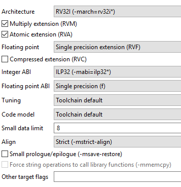
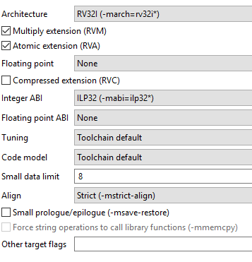
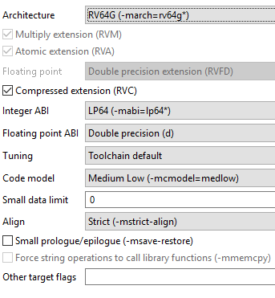

RISC-V¶
RISC-V C++ support¶
The underlying RISC-V GNU toolchain does support C++ and SoftConsole is supplied with one C++ example, but RISC-V C++ projects have not been extensively tested within the SoftConsole Eclipse/CDT environment. Using C++ with embedded targets needs to considered carefully and when making C++ project then only a subset of the C++ language should be enabled (see the bundled example what options/features of the C++ the example disabled). Useful references:
Reset/power cycle the target hardware before each debug session¶
At the moment, the debugger cannot effect a suitable RISC-V CPU/SoC reset at the start of each debug session so one debug session may be impacted by what went before – e.g. a previous debug session leaves the CPU in an ISR and a subsequent debug session does not behave as expected because of this. To mitigate this problem, it is recommended that the target hardware/board is power cycled or otherwise reset before each new debug session.
fpgenprog fails to program the board¶
Sometimes user can experience program failures even when running PolarFire SoC program idle boot mode 0 external launcher:
Warning: Unable to find file: 'C:\Microchip\SoftConsole-v2021.3\extras\mpfs\bootmode0\fpgenprogProject\target.pdb'.
Warning: [80609481]: Using local backup copy: 'C:\Microchip\SoftConsole-v2021.3.1\extras\mpfs\bootmode0\fpgenprogProject\proj_fp\projectData\target.pdb'.
PDB file 'C:\Microchip\SoftConsole-v2021.3\extras\mpfs\bootmode0\fpgenprogProject\proj_fp\projectData\target.pdb' has been loaded successfully.
DESIGN : TOP; CHECKSUM : 0000; PDB_VERSION : 1.9
===============================================================
Programmer: Embedded FP6 '082D3559' : Version = EF9B
===============================================================
programmer '082D3559' : Embedded FlashPro6
Opened 'C:\Microchip\SoftConsole-v2021.3\extras\mpfs\bootmode0\fpgenprogProject\proj_fp\proj_fp.pro'
The 'open_project' command succeeded.
Info: Programming is already enabled for device 'target'.
The 'enable_device' command succeeded.
PPD file 'C:/Microchip/SoftConsole-v2021.3/extras/mpfs/bootmode0/fpgenprogProject/proj_fp/target.ppd' has been loaded successfully.
DESIGN : TOP; CHECKSUM : 0000; PDB_VERSION : 1.0
The 'set_programming_file' command succeeded.
The 'set_programming_action' command succeeded.
programmer '082D3559' : Scan Chain...
programmer '082D3559' : Check Chain...
programmer '082D3559' : Scan and Check Chain PASSED.
@@ACTIVITY 1
programmer '082D3559' : device 'target' : Executing action PROGRAM
Performing FPGA action. Please wait...
eFP6 acceleration mode enabled with PPD file. Please wait...
@@ACTIVITY 2
16:45:46 ERROR - Running the fpgenprog.exe PROGRAM action failed.
To see more verbose errors it’s good to run the last fpgenprog invocation again from the command line. To see the log file, for example for boot mode 0 it’s in the <SC_INSTALL_DIR>/extras/mpfs/bootmode0/debugLog.txt. The last fpgenprog invocation should look similar like to:
c:\microchip\libero\Program_Debug_v2021.3\Program_Debug_Tool\bin64\fpgenprog.exe run_action --location c:/microchip/SoftConsole-v2021.3/extras\mpfs/bootmode0/fpgenprogProject --action PROGRAM
17:03:29 INFO - Selected boot mode "0 - idle boot" and working in directory "D:\work\microchip\SoftConsole-v2021.3\extras\mpfs".
17:03:29 DEBUG - Workdir=D:\work\microchip\SoftConsole-v2021.3\extras\mpfs die=MPFS250T_ES diePackage=FCVG484 bm=0 - idle boot verify=false elf=null
17:03:29 DEBUG - Invoking command: "D:\work\microchip\libero\Program_Debug_v2021.3\Program_Debug_Tool\bin64\fpgenprog.exe new_project --location D:\work\microchip\SoftConsole-v2021.3\extras\mpfs/bootmode0/fpgenprogProject --target_die MPFS250T_ES --target_package FCVG484".
17:03:30 DEBUG - Finished with exit code: "0".
17:03:30 INFO - Preparing for bitstream generation...
17:03:30 DEBUG - Invoking command: "D:\work\microchip\libero\Program_Debug_v2021.3\Program_Debug_Tool\bin64\fpgenprog.exe mss_boot_info --location D:\work\microchip\SoftConsole-v2021.3\extras\mpfs/bootmode0/fpgenprogProject --u_mss_bootmode 0".
17:03:30 DEBUG - Finished with exit code: "0".
17:03:30 DEBUG - Invoking command: "D:\work\microchip\libero\Program_Debug_v2021.3\Program_Debug_Tool\bin64\fpgenprog.exe envm_client --location D:\work\microchip\SoftConsole-v2021.3\extras\mpfs/bootmode0/fpgenprogProject --number_of_bytes 1 --content_file_format intel-hex --content_file D:\work\microchip\SoftConsole-v2021.3\extras\mpfs/bootmode0/bootmode0.hex --start_page 0 --client_name bootmode0_0".
17:03:30 DEBUG - Finished with exit code: "0".
17:03:30 INFO - Generating bitstream...
17:03:30 DEBUG - Invoking command: "D:\work\microchip\libero\Program_Debug_v2021.3\Program_Debug_Tool\bin64\fpgenprog.exe generate_bitstream --location D:\work\microchipSoftConsole-v2021.3\extras\mpfs/bootmode0/fpgenprogProject".
17:03:43 DEBUG - Finished with exit code: "0".
17:03:43 INFO - Programming the target...
17:03:43 DEBUG - Invoking command: "D:\work\microchip\libero\Program_Debug_v2021.3\Program_Debug_Tool\bin64\fpgenprog.exe run_action --location D:\work\microchip\SoftConsole-v2021.3\extras\mpfs/bootmode0/fpgenprogProject --action PROGRAM".
17:03:46 DEBUG - Finished with exit code: "1".
17:03:46 INFO - Console Mode = Software Version: v2021.3
Warning: Unable to find file: 'D:\work\microchip\SoftConsole-v2021.3\extras\mpfs\bootmode0\fpgenprogProject\target.pdb'.
Warning: [80609481]: Using local backup copy: 'D:\work\microchip\SoftConsole-v2021.3.1\extras\mpfs\bootmode0\fpgenprogProject\proj_fp\projectData\target.pdb'.
PDB file 'D:\work\microchip\SoftConsole-v2021.3\extras\mpfs\bootmode0\fpgenprogProject\proj_fp\projectData\target.pdb' has been loaded successfully.
DESIGN : TOP; CHECKSUM : 0000; PDB_VERSION : 1.9
Opened 'D:\work\microchip\SoftConsole-v2021.3\extras\mpfs\bootmode0\fpgenprogProject\proj_fp\proj_fp.pro'
The 'open_project' command succeeded.
Info: Programming is already enabled for device 'target'.
The 'enable_device' command succeeded.
PPD file 'D:/work/microchip/SoftConsole-v2021.3/extras/mpfs/bootmode0/fpgenprogProject/proj_fp/target.ppd' has been loaded successfully.
DESIGN : TOP; CHECKSUM : 0000; PDB_VERSION : 1.0
The 'set_programming_file' command succeeded.
The 'set_programming_action' command succeeded.
Error: No programmers found. Please check the programmer connection to the computer and ensure the drivers are properly installed.
Error: Failed to run Action.
Exported log file D:\work\microchip\SoftConsole-v2021.3\extras\mpfs\bootmode0\fpgenprogProject\proj_fp\proj_fp.log.
Error: The command 'run_selected_actions' failed.
Error: Failure when executing Tcl script. [ Line 5 ]
Error: The Execute Script command failed.
Exported log file D:\work\microchip\SoftConsole-v2021.3\extras\mpfs/bootmode0/fpgenprogProject\proj_fp\proj_fp.log.
Software Version: v2021.3
Warning: Unable to find file: 'D:\work\microchip\SoftConsole-v2021.3\extras\mpfs\bootmode0\fpgenprogProject\target.pdb'.
Warning: Using local backup copy: 'D:\work\microchip\SoftConsole-v2021.3\extras\mpfs\bootmode0\fpgenprogProject\proj_fp\projectData\target.pdb'.
PDB file 'D:\work\microchip\SoftConsole-v2021.3\extras\mpfs\bootmode0\fpgenprogProject\proj_fp\projectData\target.pdb' has been loaded successfully.
DESIGN : TOP; CHECKSUM : 0000; PDB_VERSION : 1.9
Opened 'D:\work\microchip\SoftConsole-v2021.3\extras\mpfs\bootmode0\fpgenprogProject\proj_fp\proj_fp.pro'
The 'open_project' command succeeded.
Info: Programming is already enabled for device 'target'.
The 'enable_device' command succeeded.
PPD file 'D:/work/microchip/SoftConsole-v2021.3/extras/mpfs/bootmode0/fpgenprogProject/proj_fp/target.ppd' has been loaded successfully.
DESIGN : TOP; CHECKSUM : 0000; PDB_VERSION : 1.0
The 'set_programming_file' command succeeded.
The 'set_programming_action' command succeeded.
Error: No programmers found. Please check the programmer connection to the computer and ensure the drivers are properly installed.
Error: Failed to run Action.
Exported log file D:\work\microchip\SoftConsole-v2021.3\extras\mpfs\bootmode0\fpgenprogProject\proj_fp\proj_fp.log.
Error: The command 'run_selected_actions' failed.
Error: Failure when executing Tcl script. [ Line 5 ]
Error: The Execute Script command failed.
17:03:46 ERROR - Running the fpgenprog.exe PROGRAM action failed.
If invoking the fpgenprog from command line shows the following error: Error: Failed to run action. Return code = -1073741819. Then contact support for Libero or Program and Debug as this issue is outside SoftConsole’s scope.
Memory view problems¶
When using the Memory Monitor or Memory Browser views to view memory in a Mi-V RISC-V system warnings such as the following may appear in the debug/OpenOCD log view – these can be ignored for the moment.
Warn : negative acknowledgment, but no packet pending
Warn : keep_alive() was not invoked in the 1000ms timelimit. GDB alive packet not sent!
(1001). Workaround: increase "set remotetimeout" in GDB
or
Info : dtmcontrol_idle=5, dmi_busy_delay=8278771, ac_busy_delay=0
In some cases, the memory view may not display the memory contents correctly displaying, instead, question marks. This will be fixed in a future release.
Multiple definition of _start/_init/_fini etc.¶
One of the following errors:
multiple definition of `_start'
multiple definition of `_init'
multiple definition of `_fini'
Possibly using the Mi-V RISC-V or PolarFire SoC startup code while the compiler is trying to use its own startup code. Possible fix is to not use the compiler startup code. Check the following checkbox:
![digraph {
graph [rankdir="LR", ranksep=.01, bgcolor=transparent];
node [fontname="Verdana", fontsize="9", shape="rectangle", width=.1, height=.2, margin=".04,.01", style=filled, fillcolor=white];
edge [arrowsize=.7];
"Project Properties" -> "C/C++ Build" -> "Settings" -> "Tool Settings" -> "GNU RISC-V Cross C/C++ Linker" -> "General" -> "-nostartfiles option"
}](../_images/graphviz-395c59643e413a12e198f9d41157c764a73d3d1d.png)
“Error: Got exception …” when reading some RISC-V registers¶
Not all RISC-V registers are implemented in all RISC-V targets. For example, RISC-V targets with no hardware floating point
support (no F, D or Q extension support) do not implement any FPU (Floating Point Unit) registers. Similarly, not all
Control/Status Registers (CSRs) are implemented in all cases. When an attempt is made to read a register that does not exist
then OpenOCD may display a message of the form:
Error: Got exception 0xffffffff when reading register ...
Such error messages can be safely ignored.
Error message: can’t link hard-float modules with soft-float modules¶
Possibly caused when project settings which affect floating point section changed without doing a clean rebuild.
Clean the project
Sometimes this is not enough and deleting the build folders is enecesary, for example: Debug/Release configurations (however configuration names might differ between projects).
Also check that the
RVFfloating point configuration options and select matchingarch/abi.The screenshot below has matching
ArchitecturewithInteger ABIand matchingFloating pointwith theFloating point ABI.
The screenshot below doesn’t use any HW floating point (only soft-float software emulation can be used) and therefore both
Floating pointandFloating point ABIare set to none.
The screenshot below has matching
ArchitecturewithInteger ABIand matchingFloating pointwith theFloating point ABI.
Note
The architecture was set to
RV64Ginstead ofRV64Itherefor extensionsAMFDare forcefully enabled because RV64G == RV64IAMFDThe selected Architecture and ABI combination needs to be supported by our multilibs.
Make sure the target support given extensions/features, do not deploy RV64G application on RV32 target. Nor application using RV32IMAF on a RV32IMA target.
Then rebuild the application from scratch
Error: gdb sent a packet with wrong register size¶
Debug launcher fails with error:
Error: gdb sent a packet with wrong register size
Info : dropped 'gdb' connection
Or the following error:
Error: gdb sent 64 bits for a 32-bit register (pc)
This indicates a mismatch between target architecture and what is expected. This can happen when debugging RISC-V 64-bit software on a RISC-V 32-bit target (or vice versa) and in general it is critical that the selected architecture and ABI match the target platform.
Close attention needs to be paid to the selected architecture and ABI in the project settings. If floating-point extension and floating-point ABI is set correctly. And if the debug launcher is not setting wrong arch, found in the launcher properties:
![digraph {
graph [rankdir="LR", ranksep=.01, bgcolor=transparent];
node [fontname="Verdana", fontsize="9", shape="rectangle", width=.1, height=.2, margin=".04,.01", style=filled, fillcolor=white];
edge [arrowsize=.7];
"Debug Configuration" -> "Debugger" -> "GDB Client Setup" -> "Commands"
}](../_images/graphviz-f5115034efe0c9bda963ba5f12780365679c95c5.png)
On RV-32 should be set to set architecture riscv:rv32
Note
If in previous documents and projects was set arch riscv:rv32 used, then it can be considered as analogous. The arch is an abbreviation for architecture and does the same function.
In an edge case this problem might be present even when all settings are correct, but using a Makefile non-managed project on Linux SoftConsole. This happens when the cross compiler is incorrectly detected and the native tools are used instead (which are x86 and they do not match the RISC-V registers).
Should contains ${cross_prefix}gdb${cross_suffix} as tool name, it uses macros and should be resolved into correct actual target name. The actual name:
should be riscv64-unknown-elf-gdb. In case this actual name got resolved into gdb only then the issue can be fixed by hardcoding full name riscv64-unknown-elf-gdb without using the ${cross_prefix} and ${cross_suffix} macros.
Debug launch configuration settings differ for Cortex-M and RISC-V¶
Be aware that the debug launch configuration settings are different for Cortex-M and RISC-V targets as explained above. The default settings may not automatically match the target CPU. Care must be taken to ensure that the correct configuration settings are applied especially on the Debugger tab. The easiest way to avoid problems is to use the example workspace debug launch configurations as a guide or copy the appropriate one and then customize and specific settings.
OpenOCD crashes when attempting to debug RISC-V¶
In some cases, OpenOCD may crash when attempting to debug a RISC-V target. This happens when the debug session would fail anyway due to everything not being order for it to work – for example, the target board is not connected or powered up or the wrong target board is connected. In some cases, such a crash may necessitate closing SoftConsole and restarting it in order for a subsequent debug session to work.
Truncated register 16 in remote ‘g’ packet¶
This error message occurs when debugging a Mi-V soft core RISC-V 32-bit target, but the debugger tries to access it as it if was a 64-bit target.
Error in final launch sequence
Failed to execute MI command:
-target-select remote localhost:3333
Error message from debugger back end:
Truncated register 16 in remote 'g' packet
Failed to execute MI command:
-target-select remote localhost:3333
Error message from debugger back end:
Truncated register 16 in remote 'g' packet
Truncated register 16 in remote 'g' packet
This issue can be resolved in two ways:
The recommended way: give the debugger access to the debugging symbols file by going to:
and making sure that this command is included where
<proj-name>represents the project namefile ${config_name:<proj-name>}/<proj-name>.elfThe alternative way: by using an older GDB and explicitly specifying the target RISC-V architecture. Go to
and make sure that the following command is present:
set architecture riscv:rv32
Note
If in previous documents and projects was
set arch riscv:rv32used, then it can be considered as analogous. Thearchis an abbreviation forarchitectureand does the same function.And then, go to:
and change
${cross_prefix}gdb${cross_suffix}to
${cross_prefix}gdb-8_3${cross_suffix}
Application is stuck in main_first_hart and is not reaching e51()¶
Depending on the HAL version and project settings this behavior can change. The main_first_hart() in the system_startup.c is declared as a weak. Custom implementation can override the default functionality and the behavior might be different between the projects. When troubleshooting the issue, temporary remove the overridden functionality (use the functions shipped with HAL) and double check if all harts are present and not forcefully halted (as some Renode launchers/scripts can halt unused harts). If the issue is resolved, then it might be caused by the HAL v1.5 expecting all harts to be present. A MPFS_HAL_LAST_HART preprocessor define can be used to tweak the new HAL.
Extra attention is required when:
porting SoftConsole 6.0 project to later releases
changing HAL version
working with a project which provides custom HAL
cc1.exe: error: -march=<YOUR_ARCHITECTURE> invalid ISA string¶
The ABI and the architecture need to be correct valid combination (rv32 architecture will not work with rv64 ABI), check your Project Properties. See Packages used section for listed supported multilibs as that might be related issue. Following error indicates the same issue:
target emulation `elf64-littleriscv' does not match `elf32-littleriscv'
can't link hard-float modules with soft-float modules
When valid, but unsupported multilib combination is selected, then RV64G is used as fallback, this can cause misleading error messages about mixing floats, mixing 32-but/64-bit, but it’s only symptoms of misconfiguring multilibs. The used multilib is compound together from the selections made in the
![digraph {
graph [rankdir="LR", ranksep=.01, bgcolor=transparent];
node [fontname="Verdana", fontsize="9", shape="rectangle", width=.1, height=.2, margin=".04,.01", style=filled, fillcolor=white];
edge [arrowsize=.7];
"Project Properties" -> "C/C++ Build" -> "Settings" -> "Tool Settings" -> "Target Processor"
}](../_images/graphviz-4c395b47eedff281e595e793d092072027bfc8d2.png)
Delete existing build folder (sometimes make clean is not enough), double check if the Project Properties are correct (if in doubt compare side by side with similar existing working project) and rebuild the project. Many cryptic looking errors can be caused using invalid or unsupported combinations in the Project Properties.
requested ABI requires -march to subsume the ‘D’ extension¶
Or the following:
cc1: error: ABI requires -march=rv64
Can be caused by having enabled double floating-point precision (64-bit) on 32-bit architecture targets which is not supported. See Packages used section for listed supported multilibs combinations.
Enabling D by unintentionally can be caused by using RV64G without realizing it, this can happen when the target processor is set to Toolchain default. The toolchain default then will use march=rv64gc/mabi=lp64 even if the application is meant for other targets such as Mi-V RV32.
Make sure the following is NOT set to Toolchain default:
![digraph {
graph [rankdir="LR", ranksep=.01, bgcolor=transparent];
node [fontname="Verdana", fontsize="9", shape="rectangle", width=.1, height=.2, margin=".04,.01", style=filled, fillcolor=white];
edge [arrowsize=.7];
"Project Properties" -> "C/C++ Build" -> "Settings" -> "Tool Settings" -> "Architecture" -> "Target Processor"
}](../_images/graphviz-a69badc009bcecab8263195965dcb240e8d02b82.png)
Another cause is when selected architecture/ABI combination is not supported and the default RV64G is used instead. Double check if the selected Architecture and ABI combination is supported by our multilibs.
Examples of supported architecture/ABI settings of the:
rv32e requires ilp32e ABI¶
Valid, but unsupported architecture and ABI combination. All RV32E targets are not supported as listed in the Packages used
Target emulation elf64-littleriscv does not match elf32-littleriscv¶
Possibly it can be caused when selected RISC-V architecture/ABI does not have a matching multilib and the default RV64GC is used instead. On RV32 targets the problem is obvious, however on RV64 target this problem might surface in more subtle way.
Examples of supported architecture/ABI settings of the:
Full list of supported multilibs (if the multilib is not listed, such as RV32E, then it’s not supported):
| march | mabi |
|---|---|
| rv32i | ilp32 |
| rv32ia | ilp32 |
| rv32iac | ilp32 |
| rv32iaf | ilp32f |
| rv32iafc | ilp32f |
| rv32ic | ilp32 |
| rv32if | ilp32f |
| rv32ifc | ilp32f |
| rv32im | ilp32 |
| rv32ima | ilp32 |
| rv32imac | ilp32 |
| rv32imaf | ilp32f |
| rv32imafc | ilp32f |
| rv32imc | ilp32 |
| rv32imf | ilp32f |
| rv32imfc | ilp32f |
| rv64i | lp64 |
| rv64ia | lp64 |
| rv64iac | lp64 |
| rv64iaf | lp64f |
| rv64iafc | lp64f |
| rv64iafd | lp64d |
| rv64iafdc | lp64d |
| rv64ic | lp64 |
| rv64if | lp64f |
| rv64ifc | lp64f |
| rv64ifd | lp64d |
| rv64ifdc | lp64d |
| rv64im | lp64 |
| rv64ima | lp64 |
| rv64imac | lp64 |
| rv64imaf | lp64f |
| rv64imafc | lp64f |
| rv64imafd | lp64d |
| rv64imafdc | lp64d |
| rv64imc | lp64 |
| rv64imf | lp64f |
| rv64imfc | lp64f |
| rv64imfd | lp64d |
| rv64imfdc | lp64d |